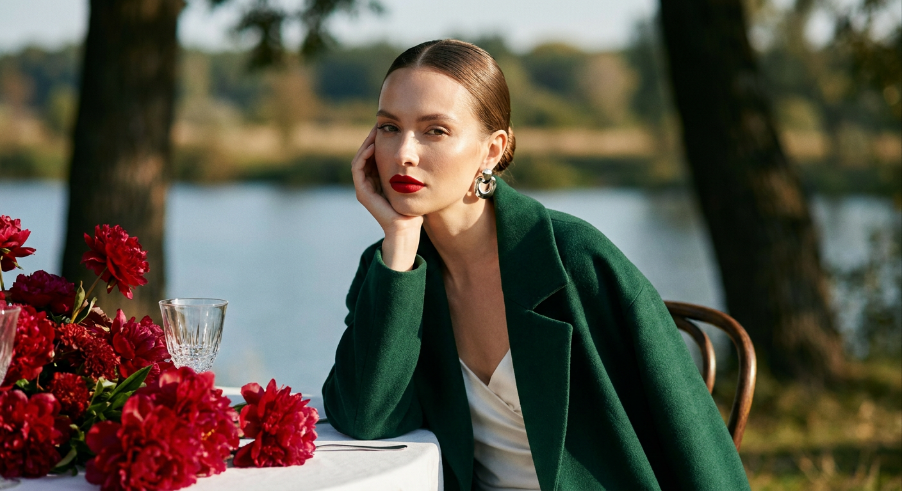
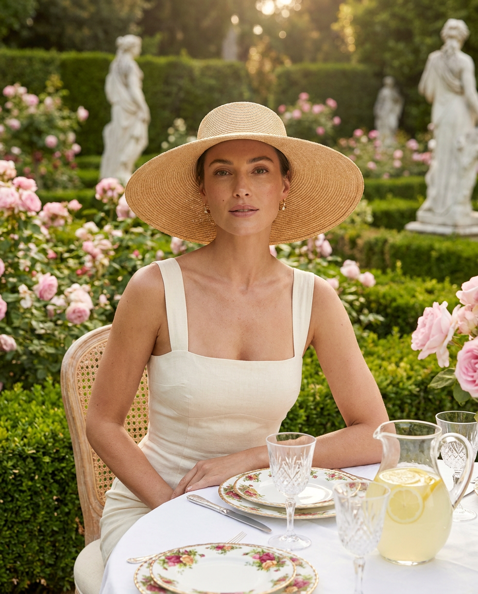
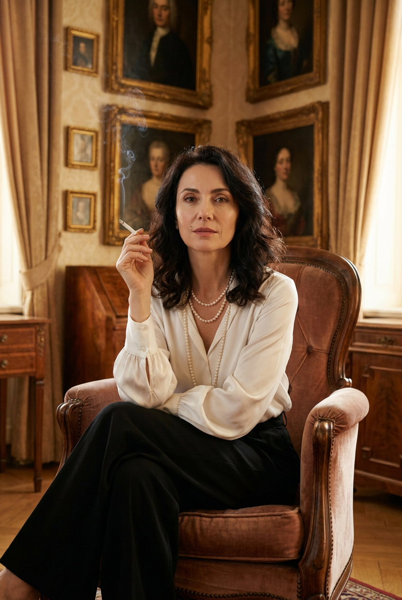
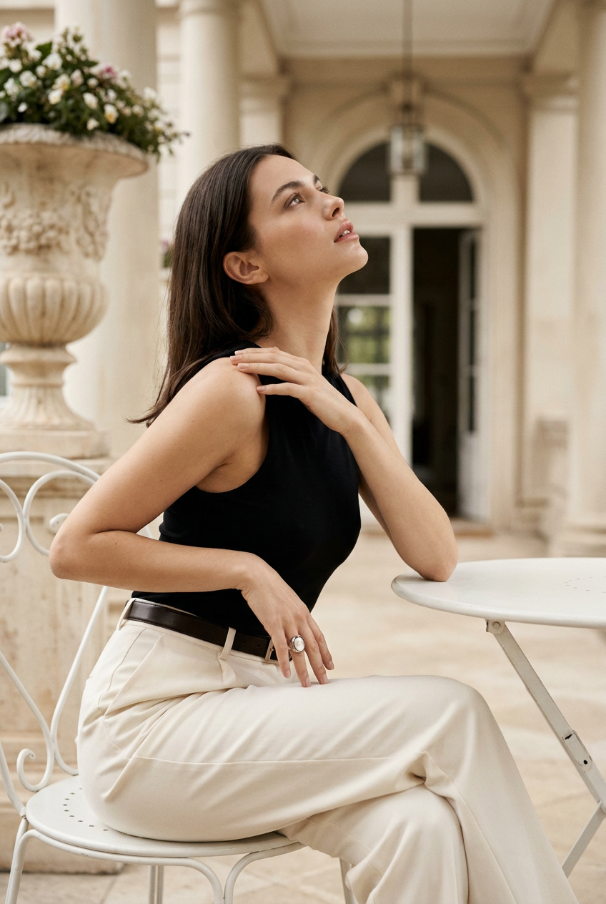
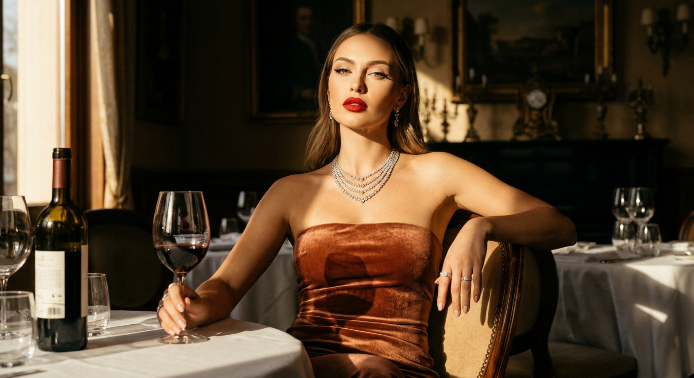
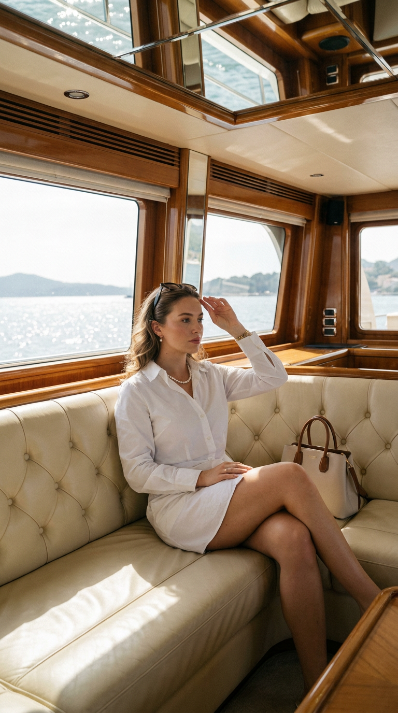
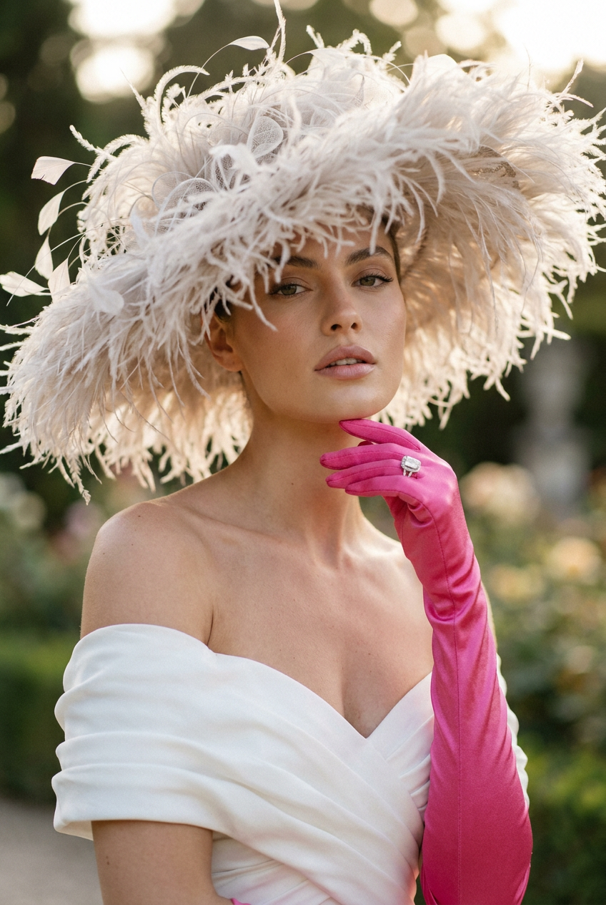
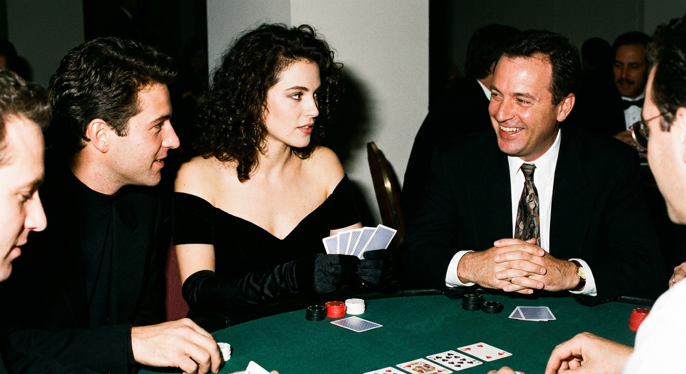
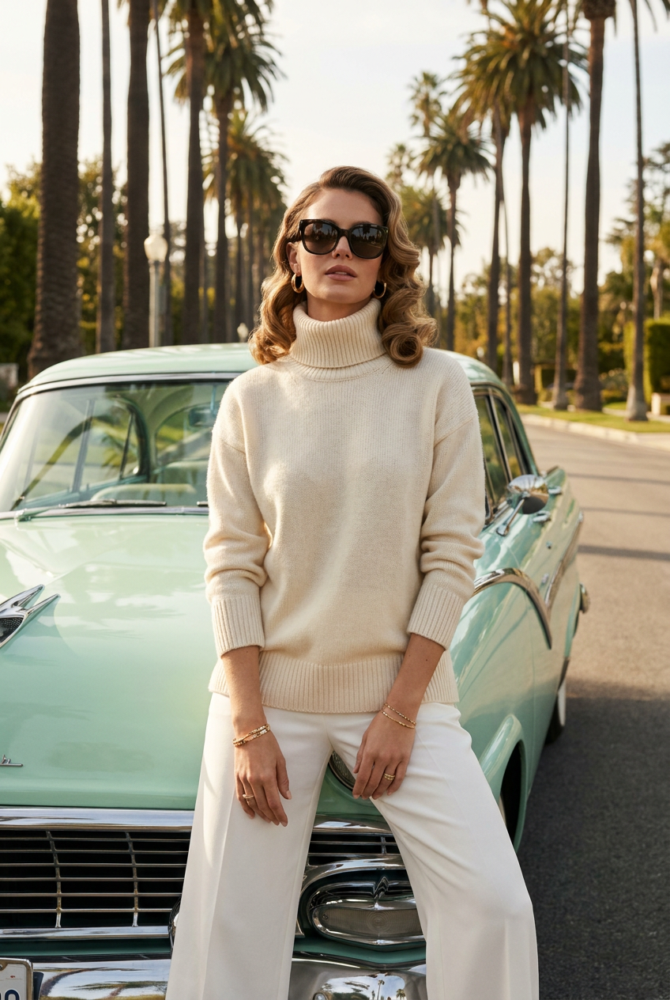
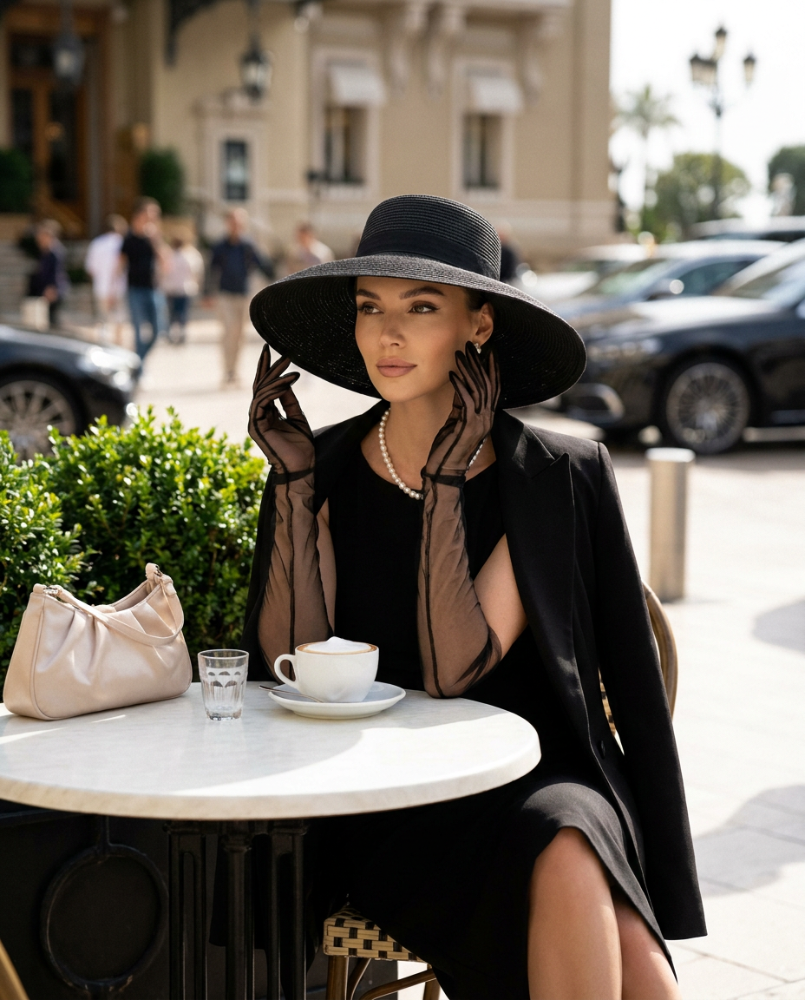

ИИ-фото Old Money: 10 промптов для нейросети

Снимки в стиле Old Money выглядят дорого не из-за логотипов, а благодаря свету, фактурам, позе и точной работе с деталями. Если обычный запрос выдаёт пластиковую кожу, случайную одежду и неузнаваемое лицо, генерация по продуманному промпту помогает собрать цельный editorial-образ.
В подборке — 10 сценариев для нейросети: садовая вечеринка, винтажный салон, яхта, уличное кафе, казино, ретроавтомобиль и другие локации. Каждый промпт рассчитан на работу с референсом лица и сохраняет ключевые параметры съёмки.
Как сгенерировать такое фото: пошагово
Нужен снимок анфас при ровном свете, лицо в кадре целиком, без тёмных очков и головных уборов. Разрешение от 1000 пикселей по короткой стороне. Чем чётче исходник, тем точнее модель повторит черты.
Выберите сценарий ниже и нажмите «Копировать» — текст уйдёт в буфер целиком, вместе с командой сохранения внешности. Эта команда стоит первой строкой и отвечает за то, чтобы на выходе было ваше лицо, а не случайное.
Кнопка «Сгенерировать» рядом с каждым промптом открывает модель в новой вкладке. Nano Banana Pro работает с референсом лица — в отличие от моделей, которые генерируют портрет с нуля и узнаваемость теряют.
Промпт — в поле ввода, портрет — через загрузку референса. Порядок значения не имеет, но без референса команда сохранения внешности работать не будет: модели нечего сохранять.
Для сторис и ленты берите 9:16, для превью и обложек — 4:3. Первый результат редко идеален: если поза или свет ушли не туда, поправьте соответствующую часть промпта и запустите заново. Обычно хватает двух-трёх итераций.
10 промптов для генерации
1. Изумрудное пальто на террасе
Строго сохранить внешность по загруженному референсу: черты лица, пропорции, мимику и текстуру кожи без изменений. Фотореалистичный fashion-editorial портрет женщины с лицом по референсу. Она сидит за столом на открытом воздухе, боком к объективу, корпус немного развёрнут. Локоть лежит на столешнице, ладонь изящно поддерживает лицо. Взгляд спокойный, уверенный, чуть холодный и надменный, но женственный и аристократичный. На ней глубокое изумрудное шерстяное oversize-пальто и светлое белое шелковистое платье. Образ выглядит дорого и сдержанно, как обложка модного журнала. Натуральная кожа с мягким glow, выразительные скулы, гладкие брови, аккуратный luxury-макияж, насыщенная красная помада, деликатный хайлайтер. Мягкий дневной свет, естественные тени, премиальная outdoor-съёмка, реалистичная фактура ткани и кожи, малая глубина резкости, объектив 85 мм, вертикальный кадр.
2. Садовая вечеринка с розами

Строго сохранить внешность по загруженному референсу: черты лица, пропорции, мимику и текстуру кожи без изменений. Премиальный фотореалистичный портрет женщины с лицом из референса. Она сидит за сервированным столом в роскошном саду: вокруг цветущие розы, густые зелёные кусты и классические мраморные статуи. Летний образ в эстетике Old Money, garden party и quiet luxury. На женщине кремовое облегающее платье на широких бретелях и большая соломенная шляпа с широкими полями. Поза расслабленная, благородная, взгляд направлен прямо в камеру; макияж естественный, кожа светится мягко и сохраняет натуральную текстуру. На столе белая скатерть, фарфор с цветочным рисунком, стеклянные бокалы, изящные приборы, кувшин лимонада с дольками лимона. Тёплый дневной свет, мягкие тени, воздушная романтичная атмосфера, premium lifestyle photography, высокая детализация, малая глубина резкости, объектив 85 мм, вертикальная композиция.
3. Жемчуг в винтажном салоне

Строго сохранить внешность по загруженному референсу: черты лица, пропорции, мимику и текстуру кожи без изменений. Создай фотореалистичный редакционный портрет женщины с внешностью по референсу в роскошном винтажном интерьере. Она расслабленно сидит в кресле и смотрит прямо в камеру. Позади — стена с классическими портретами в тяжёлых золочёных рамах. В одной руке женщина держит сигарету, вокруг неё поднимается лёгкий полупрозрачный дым. На ней белая шелковая блузка с объёмными рукавами, чёрные широкие брюки, длинные жемчужные бусы и многослойное жемчужное ожерелье. Волосы тёмные, уложены мягкими волнами; макияж естественный, глаза выразительные, губы аккуратно очерчены. Настроение уверенное, спокойное, аристократичное. Тёплое кинематографичное освещение, атмосферная глубина, натуральная текстура кожи, luxury editorial, vintage aristocratic mood, ultra realistic, объектив 85 мм, малая глубина резкости. Вертикальный кадр по пояс или в полный рост.
4. Терраса старинного здания

Строго сохранить внешность по загруженному референсу: черты лица, пропорции, мимику и текстуру кожи без изменений. Вертикальный фотореалистичный fashion-портрет женщины с лицом из загруженного референса. Она сидит за маленьким круглым белым металлическим столиком на светлой террасе или во внутреннем дворике старинного здания. Корпус повёрнут вправо, женщина расположена боком к камере. Одна рука вытянута и мягко лежит на столе, вторая касается плеча или обнимает верхнюю часть противоположной руки. Голова чуть откинута назад и поднята, взгляд направлен вверх и в сторону, губы слегка приоткрыты; выражение мечтательное, уверенное и немного загадочное. На ней чёрный облегающий топ без рукавов, минималистичный дорогой образ. Поза театральная, но естественная, как в премиальной editorial-съёмке. Светлый архитектурный фон, мягкий дневной свет, натуральная кожа, высокая детализация, вертикальная композиция, объектив 85 мм, малая глубина резкости.
5. Терракотовый бархат и вино

Строго сохранить внешность по загруженному референсу: черты лица, пропорции, мимику и текстуру кожи без изменений. Кинематографичный портрет женщины с лицом по референсу в роскошном винтажном интерьере европейского ресторана или дворцового зала. Она сидит за столом, слегка откинувшись на стуле: одна рука лежит на спинке, в другой находится бокал красного вина. Взгляд прямо в объектив, выражение уверенное, расслабленное, с лёгким вызовом. На женщине обтягивающее вечернее платье без бретелей из бархата тёплого терракотово-коричневого оттенка, подчёркивающее декольте. На шее многослойное бриллиантовое ожерелье, на ушах серьги, на пальцах кольца. Макияж выразительный: яркая матовая красная помада, чёткие стрелки, лёгкий контуринг. Драматичный тёплый свет, жёсткие солнечные лучи сбоку через окно, глубокие контрастные тени в технике chiaroscuro. Детально показать кожу, бархат и украшения, luxury fashion photography, вертикальный кадр.
6. Белое платье на яхте

Строго сохранить внешность по загруженному референсу: черты лица, пропорции, мимику и текстуру кожи без изменений. Ультрареалистичная luxury editorial-фотография в вертикальном формате 9:16. Женщина с лицом по референсу сидит внутри роскошной винтажной яхты или дорогой моторной лодки на светлом кожаном диване с мягкой каретной стяжкой. Интерьер сочетает кремовую кожу, полированное дерево, большие панорамные окна и отражение в зеркальном потолке. На ней лёгкое белое платье-рубашка с пуговицами и аккуратным женственным кроем, жемчужное колье, тонкие украшения; солнцезащитные очки лежат на голове. Волосы уложены мягкими локонами. Рядом стоит дорогая светлая сумка с коричневыми ручками. Поза расслабленная и статусная: одна нога перекинута на другую, одна рука поднята ко лбу, будто женщина смотрит вдаль от яркого солнца. За окнами сияющая вода и летний день. Мягкий солнечный свет, натуральная кожа, дорогой lifestyle, высокая детализация, вертикальный кадр 9:16.
7. Перья и couture-настроение

Строго сохранить внешность по загруженному референсу: черты лица, пропорции, мимику и текстуру кожи без изменений. Фотореалистичный вертикальный fashion-портрет крупным планом, в кадре грудь и плечи женщины с лицом по референсу. Камера расположена на уровне глаз, корпус слегка повёрнут, лицо почти фронтальное. Взгляд направлен прямо в объектив, выражение спокойное, уверенное и немного отстранённое, губы мягко приоткрыты. Главный акцент — большая драматичная шляпа из светлых перьев и объёмных декоративных элементов. Она занимает верхнюю часть изображения, имеет широкий воздушный силуэт и создаёт эффект couture. Волосы уложены естественно, частично скрыты под шляпой, отдельные пряди мягко обрамляют лицо. Макияж профессиональный, но натуральный: ровная кожа с сохранённой текстурой, аккуратные брови, выразительные глаза, деликатный скульптурирующий свет. High-fashion editorial, мягкий студийный свет, чёткая детализация перьев, объектива 85 мм, малая глубина резкости, вертикальная композиция.
8. Покер в духе девяностых

Строго сохранить внешность по загруженному референсу: черты лица, пропорции, мимику и текстуру кожи без изменений. Создай фотореалистичный fashion-кадр с лицом женщины из референса, сохранив её пол, возраст, настоящий цвет и длину волос, естественную текстуру кожи и узнаваемую внешность. Женщина в элегантном, слегка сексуальном чёрном платье играет в покер за столом с мужчинами. На ней длинные чёрные перчатки, волосы уложены в красивую причёску. Она выглядит королевой вечера: выражение смелое, страстное и уверенное, мужчины за столом явно очарованы. Сцена сочетает мягкую женственность и бунтарскую энергетику. Используй резкую вспышку, жёсткий контраст и эстетику случайного снимка из 1990-х: заметные блики, глубокие тени, немного плёночного зерна, ощущение живого вечера без постановочной стерильности. Покажи карты, фишки, край стола и реакцию игроков. Вертикальный editorial-кадр, реалистичные материалы и естественная мимика.
9. Ретроавтомобиль и пальмы

Строго сохранить внешность по загруженному референсу: черты лица, пропорции, мимику и текстуру кожи без изменений. Фотореалистичная fashion/editorial-съёмка женщины с лицом по референсу рядом с винтажным американским автомобилем 1950–1960-х годов пастельно-мятного цвета. Локация напоминает элитный район Калифорнии: высокие пальмы, яркое солнечное небо, тёплый воздух и стильная городская улица. Женщина слегка опирается бедром или рукой на капот, одна нога немного согнута, корпус развёрнут к камере. Взгляд прямой, выражение спокойное, уверенное и чуть загадочное. На ней объёмный светлый кремовый или молочно-белый кашемировый свитер с высоким горлом и дорогой мягкой фактурой, низ — широкие белые или молочные брюки. Добавь аккуратные украшения и сдержанный макияж. Солнечный дневной свет, реалистичные отражения на кузове, мягкие тени, натуральная кожа, luxury street style, высокая детализация, объектив 85 мм, вертикальный кадр.
10. Кофе на дорогой улице

Строго сохранить внешность по загруженному референсу: черты лица, пропорции, мимику и текстуру кожи без изменений. Фотореалистичный вертикальный fashion-портрет женщины с лицом по референсу. Она сидит за круглым белым столиком уличного кафе на роскошной городской улице. На женщине широкополая чёрная шляпа, чёрное платье в эстетике Old Money, прозрачные чёрные перчатки, жемчужное ожерелье и чёрный жакет, небрежно накинутый на плечи. Поза утончённая и расслабленная: руки слегка подняты к лицу, взгляд уходит в сторону, выражение спокойное, уверенное и загадочное. На столе стоят чашка кофе с белой пеной, маленький бокал и светлая атласная сумочка. На заднем плане — размытый фасад здания, зелень, прохожие и дорогие автомобили. Солнечный дневной свет, мягкие тени, лёгкое ощущение городского шума, cinematic daylight, natural skin texture, soft contrast, premium magazine aesthetic, объектив 85 мм, малая глубина резкости, вертикальная композиция.
Что важно учесть в этом стиле
Old Money держится на качестве деталей, а не на демонстративной роскоши. В кадре работают шерсть, шёлк, бархат, кашемир, жемчуг, полированное дерево, фарфор и натуральный свет. Палитра обычно спокойная: молочный, чёрный, коричневый, изумрудный, терракотовый, тёмно-синий.
Поза должна выглядеть уверенно, но не напряжённо. Лучше заранее описывать положение рук, направление взгляда и поворот корпуса. Для портрета подойдут объектив 85 мм, малая глубина резкости и естественная текстура кожи без чрезмерной ретуши.
Идеи для вариаций
- Замените сад роз скамьёй у старого теннисного клуба.
- Перенесите винтажный салон в библиотеку с камином и деревянными панелями.
- Добавьте к образу на яхте шёлковый платок, плетёную сумку или бокал лимонада.
- Сделайте автомобиль бордовым кабриолетом и перенесите съёмку на побережье.
- Поменяйте кафе на гостиничную веранду с полосатым тентом.
- Для вечернего кадра используйте свечи, старинные часы и мягкий свет настольных ламп.
Как собрать свой промпт
Сначала задайте тип съёмки и формат: например, «фотореалистичный вертикальный editorial-портрет, 9:16». Затем опишите локацию, одежду, аксессуары и позу. Отдельным блоком укажите выражение лица, направление взгляда и характер света.
В конце добавьте технические параметры: объектив 85 мм, малая глубина резкости, натуральная текстура кожи, мягкий или контрастный свет, высокая детализация. Если используете референс, попросите сохранить узнаваемые черты без изменения возраста, мимики и пропорций. Для стабильного результата сделайте 4–8 генераций, меняя за раз только один параметр.
Ошибки, из-за которых кадр не получается
- Слишком много деталей в одной фразе. Нейросеть может смешать одежду, аксессуары и фон, поэтому важные элементы лучше описывать отдельными предложениями.
- Не задана поза. Без положения рук и корпуса модель часто получает неестественные конечности.
- Перегруженная роскошь. Одновременные бриллианты, логотипы и золотой декор уводят изображение от тихой эстетики Old Money.
- Слабое описание света. Укажите источник, направление и характер теней, иначе лицо может оказаться плоским или пересвеченным.
- Чрезмерная ретушь. Формулировки вроде «идеальная кожа без пор» делают портрет пластиковым; лучше просить натуральную текстуру.
- Неподходящий референс. Размытое селфи, сильный фильтр или закрытое лицо ухудшают сохранение идентичности.
Частые вопросы
Как сделать такое ИИ-фото бесплатно?
Можно попробовать Kandinsky и Шедеврум: они подходят для текстовой генерации, но качество сохранения лица по референсу и доступные настройки могут быть ограничены. Krea AI и Arena.ai удобны для экспериментов с изображением и стилем, однако функции работы с лицом, очереди и лимиты меняются. Бесплатные режимы не гарантируют точное сходство, стабильную позу или высокое разрешение, поэтому иногда понадобится несколько попыток и последующая обработка.
Как сохранить сходство с человеком на фото?
Используйте чёткий референс анфас или в три четверти без очков, сильных фильтров и резких теней. В промпте отдельно укажите сохранение возраста, формы глаз, носа, губ, овала лица, цвета и длины волос. Не перегружайте описание макияжем и аксессуарами: они могут изменить черты.
Какой формат выбрать для публикации в соцсетях?
Для сторис, вертикальных постов и коротких видео лучше использовать пропорцию 9:16. Для карточки в ленте подойдёт 4:5, а для журнального разворота — 2:3. Формат желательно задать до генерации, иначе при последующей обрезке могут исчезнуть шляпа, руки или важные детали интерьера.
Что делать, если нейросеть искажает руки или украшения?
Упростите сцену и опишите положение каждой руки: например, одна лежит на столе, вторая касается плеча. Уберите лишние кольца и многослойные аксессуары, затем сгенерируйте несколько вариантов. Если сервис поддерживает маскирование или дорисовку, исправляйте кисти и украшения локально, а не меняйте весь кадр.